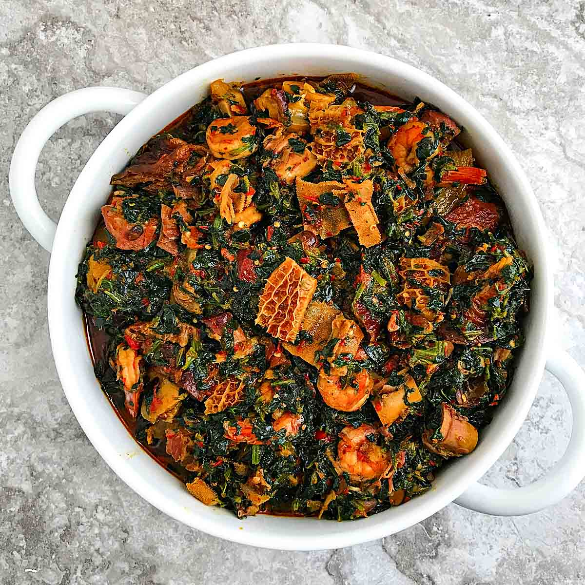
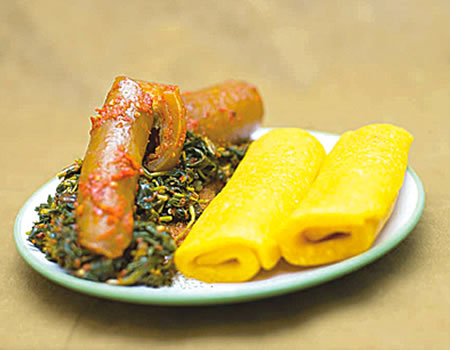
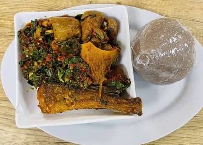

EFO RIRO(African Vegetable Stew/ Soup)
Efo riro is a rich Nigerian soup, native to the Yoruba people. The words "Efo riro" are derived from two Yoruba words, Efo which means dark leafy vegetables and riro, which means to stir.This soup can be enjoyed with different main dishes such as solid meals like pounded yam, amala, fufu, eba, oat swallow, semo and solid pap. Other main dishes like rice, pasta,boiled or fried plaintain and boiled or fried yam. it can also be enjoyed alone.It can also be adapted to appeal to vegetarians without losing its rich depth of flavor either way.
| Ingredient_name | Measurement |
|---|---|
| Large Tatashe (Red bell peppers) | 4 pieces |
| Large Onions | 2 bulbs |
| Habenaro Peppers (Ata rodo ) | 2 pieces |
| Locust beans | 1/4 Cup |
| Ground crayfish | 1/2 Small tin cup |
| Salt | 1 tablespoon |
| Beef broth | 1 Cup |
| Seasoning cubes | 2 pieces |
| Soko or ugu vegetables | 2-3 bunches |
| Palm oil | 1/2 bottle |
| Asorrted protein (Smoked fish, Shaki, Ponmo and Beef ) | 1 kg |
Pre-soup Preparation method
- Rinse vegetable clean and drain.
- Pick the vegetable from the stalk, slice into chunks and set aside.
- Wash locust beans and set aside.
- Chop 1 onion and set aside.
- Shred the smoked fish into flakes and also set aside.
- Roughly chop the bell peppers, habanero pepper and onion, add to a blender and pulse for coarse texture.
- Wash the meats and ponmo and set aside.
Cooking Method
- Boil and season the meats and ponmo with salt, lots of chopped onions and seasoning cube till it softens.
- Heat up palm oil in a pot, add chopped onions and ground crayfish and fry till onion is soft and transparent.
- Pour the blended pepper mix into the pot of oil, add 1 seasoning cube, locust beans, beef broth and allow to cook. Don't cover the pot. stir the contents of the pot often, so it does not burn.
- After about 10 minutes, the water should have reduced and oil floating at the top. Add meats, smoked fish, broth and cook for another 10 minutes.
- Add the vegetables to the cooking stew and leave for 5 minutes.
Efo riro is ready, enjoy !
- 

- 
- 